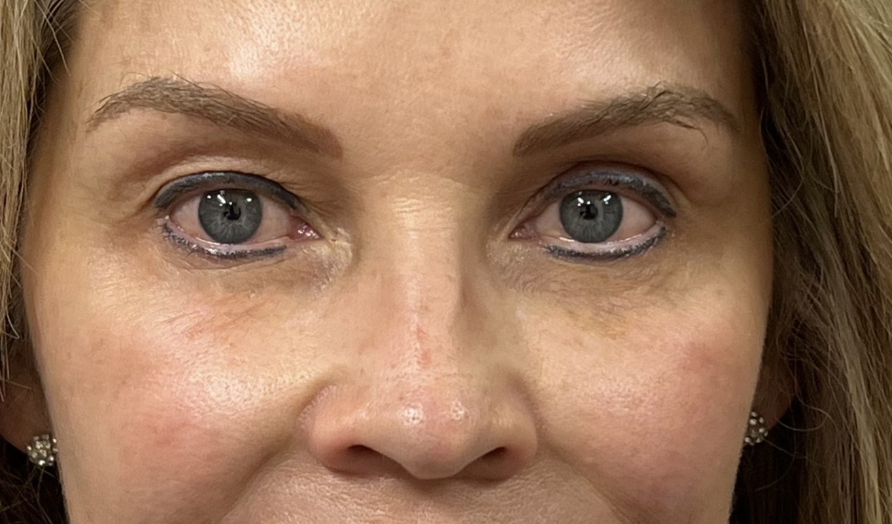

Cirugía de párpados que rejuvenece la mirada eliminando bolsas, exceso de piel y signos de cansancio. Resultado natural, descansado y elegante.
¿Qué es la blefaroplastia?
La blefaroplastia es una cirugía estética y funcional de los párpados que tiene como objetivo rejuvenecer la mirada eliminando el exceso de piel, las bolsas adiposas y los signos de cansancio que aparecen con el paso del tiempo o por predisposición genética. Es uno de los procedimientos más demandados de mi práctica como cirujano estético en CDMX, precisamente porque la mirada es el primer rasgo que delata la edad y la fatiga.
Realizada con técnica precisa, la blefaroplastia entrega un resultado que no se percibe como "operado": la persona se ve descansada, fresca y armónica, sin perder su expresión natural. La intervención puede enfocarse en los párpados superiores, inferiores, o en ambos simultáneamente según las necesidades anatómicas de cada paciente.
Beneficios de la blefaroplastia
✦
Mirada descansada
Elimina la sensación permanente de cansancio y devuelve frescura natural al rostro.
✦
Mejor visión periférica
En casos de exceso de piel marcado, mejora el campo visual obstruido por la dermatocalasia.
✦
Cicatrices ocultas
Incisiones diseñadas para esconderse en pliegues naturales y volverse prácticamente invisibles.
✦
Resultado duradero
Los efectos de la cirugía se mantienen entre 7 y 15 años, dependiendo de cada paciente.
✦
Recuperación breve
Reincorporación social entre 10 y 14 días, mucho más corta que otras cirugías faciales.
✦
Anestesia local
En la mayoría de los casos se realiza con anestesia local más sedación, sin necesidad de anestesia general.
Tipos de blefaroplastia que realizo
Blefaroplastia superior
Corrige el exceso de piel y la grasa del párpado superior. Es la indicación más frecuente para abrir la mirada y aliviar la sensación de pesadez en el párpado.
Blefaroplastia inferior
Elimina las bolsas y mejora el contorno del párpado inferior. Puede realizarse con incisión externa (subciliar) o interna (transconjuntival) sin cicatriz visible.
Blefaroplastia transconjuntival
Técnica avanzada para el párpado inferior sin cicatriz externa visible. Indicada cuando solo es necesario corregir las bolsas, no la piel.
Blefaroplastia étnica o asiática
Técnica especializada que respeta y define el pliegue palpebral según las características anatómicas asiáticas, sin alterar la identidad facial.
Cantopexia y cantoplastia
Procedimientos complementarios que reposicionan el canto externo del ojo, indicados en casos de párpado inferior caído o asimetrías.
Mi proceso paso a paso
PASO 01 · VALORACIÓN
Consulta inicial detallada
Evaluación de la anatomía periocular, posición del párpado, calidad de la piel, función palpebral y expectativas del paciente.
PASO 02 · PLANEACIÓN
Plan quirúrgico personalizado
Definición de las técnicas a emplear según cada párpado, estudios preoperatorios y consulta con el anestesiólogo.
PASO 03 · CIRUGÍA
Procedimiento en hospital certificado
Cirugía de 1 a 2 horas bajo anestesia local con sedación, en quirófano de alta especialidad. Procedimiento ambulatorio.
PASO 04 · SEGUIMIENTO
Acompañamiento postoperatorio
Revisiones a los 3, 7, 14 días y al mes. Retiro de puntos entre el día 5 y 7. Seguimiento del resultado final.
Recuperación y cuidados postoperatorios
La recuperación de la blefaroplastia es relativamente rápida en comparación con otras cirugías faciales. La mayoría de mis pacientes pueden reincorporarse a sus actividades sociales entre 10 y 14 días después de la cirugía, con maquillaje ligero para disimular cualquier residuo de inflamación o moretón.
Primeras 48 horas: reposo con cabeza elevada, compresas frías intermitentes y analgésicos según indicación.
Días 3 al 7: disminuye la inflamación visible, se retiran los puntos externos entre el día 5 y 7.
Días 7 al 14: reincorporación gradual a actividades cotidianas, ya se puede usar maquillaje suave.
Semanas 2 a 4: retorno completo a actividad laboral y social. Aún hay edema sutil.
Mes 2 al 3: resultado prácticamente final, con cicatriz cada vez más imperceptible.
Antes y después · Blefaroplastia en CDMX
Resultados reales de mis pacientes. Cada caso se planifica de forma individual respetando la anatomía original.

ANTESDESPUÉS
⇄
ANTESDESPUÉS
Blefaroplastia superior e inferior · Resultado a 6 semanas
Inversión en blefaroplastia
El costo de la blefaroplastia varía según si se realiza en uno o ambos párpados, si se combina con otros procedimientos y si requiere técnicas especializadas como cantopexia. Durante la valoración entregamos un presupuesto detallado que incluye honorarios médicos, anestesiólogo, hospital, materiales y seguimiento postoperatorio.
El presupuesto definitivo se entrega tras la consulta de valoración personalizada.
Zonas de CDMX donde atiendo
Polanco
Lomas de Chapultepec
Bosques de las Lomas
Santa Fe
Interlomas
Tecamachalco
Roma
Condesa
Del Valle
Coyoacán
San Ángel
Pedregal
Tlalpan
Insurgentes Sur
Anzures
Nápoles
Narvarte
Satélite
Naucalpan
Huixquilucan
Preguntas frecuentes sobre blefaroplastia
La blefaroplastia es una cirugía estética y funcional de los párpados que elimina el exceso de piel, bolsas y signos de envejecimiento para rejuvenecer la mirada.
La inflamación inicial disminuye en 7 a 14 días. La reincorporación social suele darse entre 10 y 14 días. El resultado final se consolida entre 2 y 3 meses.
Las incisiones se ocultan en el pliegue natural del párpado superior y por dentro o justo bajo la línea de las pestañas en el inferior. Con el tiempo se vuelven prácticamente imperceptibles.
Generalmente se realiza con anestesia local más sedación intravenosa. En algunos casos puede requerir anestesia general según la extensión del procedimiento.
El procedimiento no es doloroso gracias a la anestesia. En el postoperatorio puede haber molestia leve a moderada controlable con analgésicos comunes durante los primeros 2 a 3 días.
Recupera la frescura de tu mirada
Agenda tu valoración personalizada y conversemos sobre cómo la blefaroplastia puede ayudarte a verte tan descansado como te sientes.